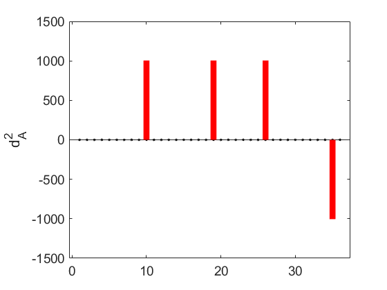
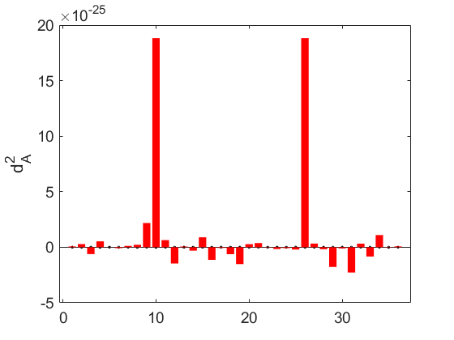
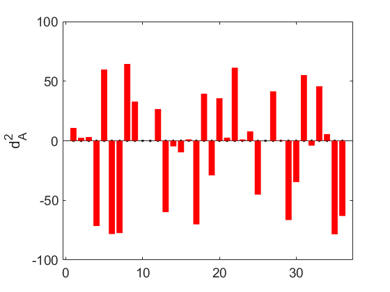

Contents
Guide line
%################################################################################# % A: Data_frame # % 1- Load your data (as CSV) in your workspace % 2- From the open window, output type : array string % 3- Before press import, please select all data include header % % B: ground_truth % 1- Load your ground truth (as CSV) in your workspce % 2- From the open window, output type : Numric matrix % 3- press import % # % # % # % # %%############################################################################## %######################################################################### %# % % % Code: Valdtion of normalztion methods # %# Author: Amen Adnan Khabeer; Jose Comacho; Crolina Comez # %# Date: 19/02/2024 %# Email: amen.a.khabeer@uotechnology.edu.iq ;josecamacho@ugr.es;gomezll@ugr.es %# %# %# % % % Val_PCAOmeda( data_frame as (2D string) , ground_truth as ( vector)) # %# % Note1 : both arguements are reqiured, no optional arguements in this function. # %# Note2 : please load your Simulation or data %# % data_frame: is your normalized data ( 2D matrix with string values) ,where, row=no of % samples, clo represents no taxan, last col represent controls( healthy/unhealthy), the header is the name of bactria % % ground_truth: a vector with double values, holding ground truth values % % % #########################################################################
CSS Code loading dataset and execution through pca_oMEDA
data_frame=CSSgenus; ground_truth=genusGT; % Exracuted the name of Classes ( Taxa) from simalution which is thie % frist raw with out last col (Tags) %function Val_PCAOmeda(data_frame,ground_truth) mystr=data_frame; class_name=mystr(1,1:width(mystr)-1); ind1 = str2double(mystr); % extacted the data only from our dataset without header and last col(Tags) xx=ind1(2:height(ind1),1:width(ind1)-1); %xx = log(xx./repmat(geomean(xx,2),1,size(xx,2))); % extracted the ecyosystems form our data (healthy-unhealthy ecosystems) l1=ind1(2:height(ind1),width(ind1)); % split points according to depth to high and low xx(isnan(xx)) = 1; xx(xx==inf)=0; low=100; high=200;
Ploting omeda for high depth and comparing to groundtruth
xx(isnan(xx))=0;
lh=(l1(high:size(xx,1))); xh=xx(high:size(xx,1),:); rj=omeda_pca(xh,1:2,[],lh); tot= sqrt( abs(rj)).* sign(rj)/sum(sqrt( abs(rj))); gt=(normalize(transpose(ground_truth),"norm",1)); ngt= ( abs(gt)).* sign(gt)/sum(( abs(gt))); e1=((ngt'-tot).^2); e=(sum(ngt'-tot)).^2; % disp('Normatization of groundtruth') % display(ngt); % disp('Normatization of omeda') % display(tot); % disp('Error per variable') % display(e1); fprintf('Total Error in high depth : %s\n', e);
Total Error in high depth : 7.692930e-02

Ploting omeda for low depth and comparing to groundtruth
lLOW=(l1(1:low)); xl=xx(1:low,:); rj=omeda_pca(xl,1:2,[],lLOW); tot= sqrt( abs(rj)).* sign(rj)/sum(sqrt( abs(rj))); gt=(normalize(transpose(ground_truth),"norm",1)); ngt= ( abs(gt)).* sign(gt)/sum(( abs(gt))); e1=((ngt'-tot).^2); e=(sum(ngt'-tot)).^2; % disp('Normatization of groundtruth') % display(ngt); % disp('Normatization of omeda') % display(tot); % disp('Error per variable') % display(e1); fprintf('Total Error low depth : %s\n', e);
Total Error low depth : 7.355582e-05

Ploting omeda for whole depth and comparing to groundtruth
rj=omeda_pca(xx,1:2,[],l1); tot1= sqrt( abs(rj)).* sign(rj)/sum(sqrt( abs(rj))); gt1=(normalize(transpose(ground_truth),"norm",1)); ngt1= ( abs(gt1)).* sign(gt1)/sum(( abs(gt1))); e11=((ngt1'-tot1).^2); e12=(sum(ngt1'-tot1)).^2; disp(sprintf('Total Error whole depth: %s', e12)); %end
Total Error whole depth: 7.530391e-02
